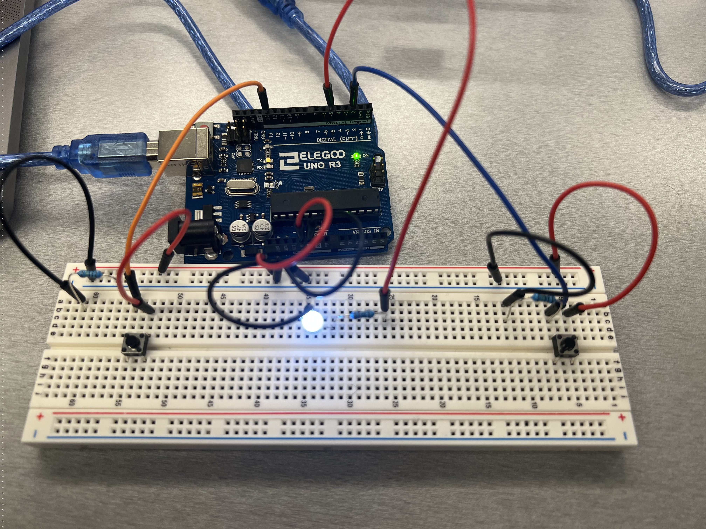
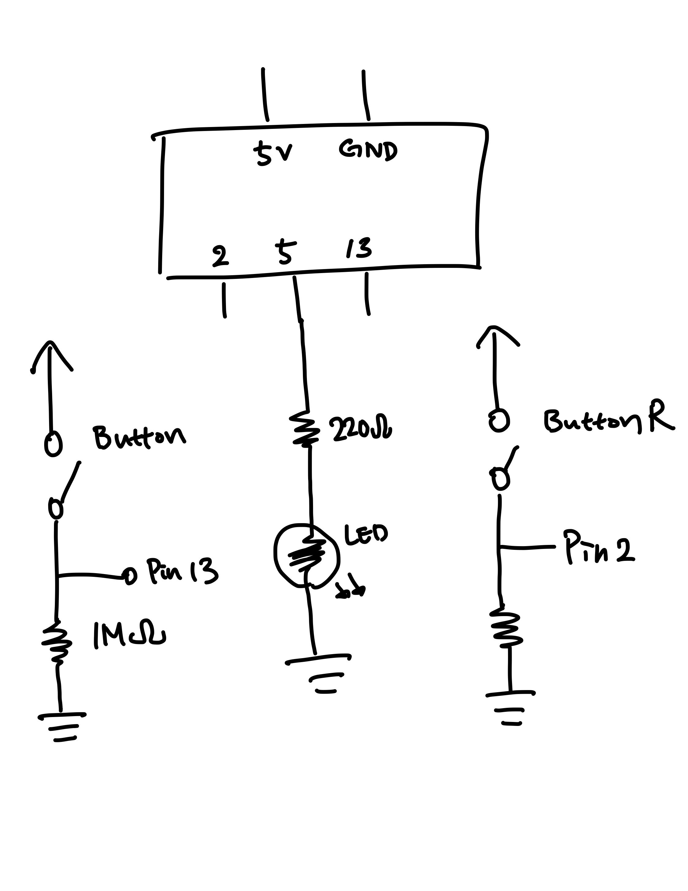

Talking to the Web!

The Arduino has two buttons, left and right. If either button is pressed, P5 responds.
From P5, any keypress will be sent back to the arduino to change the brightness of the LED at pin 5.
Cirucuit!

Schematic!

1Megaohm resistor is used as a pull-up resistor for the buttons. 220Ohm resistor is used for the white LED to limit current under 20mA.
Arduino Code:
void setup() {
Serial.begin(9600); // begin serial
pinMode(2, INPUT); // buttonR input
pinMode(13, INPUT); // buttonL input
Serial.setTimeout(10); // set the timeout for parseInt
pinMode(5, OUTPUT); // powers LED from web input
}
void loop() {
int buttonL = digitalRead(13); // detects left button input
int buttonR = digitalRead(2); // detects right button input
Serial.print("["); // turn into JSON
Serial.print(buttonL); // turn into JSON
Serial.print(","); // turn into JSON
Serial.print(buttonR); // turn into JSON
Serial.println("]"); // turn into JSON
delay(100); // wait a little bit
if (Serial.available() > 0) { // if there is serial data from the web
int inByte = Serial.read(); // read it
Serial.write(inByte); // write it as raw binary data
analogWrite(5, inByte); // use it to set the LED brightness
}
}
P5 Code:
var serial; // variable to hold an instance of the serialport library
var portName = '/dev/cu.usbmodem2101'; //rename to the name of your port
var datain; //some data coming in over serial!
var xPos = 0;
var dataarray = [0,0]; // variable to hold the object array sent from arduino
function serialEvent() {
if (serial.available()) {
var datastring = serial.readLine(); // readin some serial
var newarray; // holds array from arduino
try {
newarray = JSON.parse(datastring); // can we parse the serial
if (typeof newarray == 'object') {
dataarray = newarray; // assign the array into dataarray
}
console.log("got back " + datastring);
} catch(err) {
//console.error(err);
}
}
}
function keyPressed() {
//console.log("writing key");
serial.write(key);
}
function setup() {
serial = new p5.SerialPort(); // make a new instance of the serialport library
serial.on('list', printList); // set a callback function for the serialport list event
serial.on('connected', serverConnected); // callback for connecting to the server
serial.on('open', portOpen); // callback for the port opening
serial.on('data', serialEvent); // callback for when new data arrives
serial.on('error', serialError); // callback for errors
serial.on('close', portClose); // callback for the port closing
serial.list(); // list the serial ports
serial.open(portName); // open a serial port
createCanvas(1200, 800);
background(0x08, 0x16, 0x40);
}
// get the list of ports:
function printList(portList) {
// portList is an array of serial port names
for (var i = 0; i < portList.length; i++) {
// Display the list the console:
print(i + " " + portList[i]);
}
}
function serverConnected() {
print('connected to server.');
}
function portOpen() {
print('the serial port opened.')
}
function serialError(err) {
//print('Something went wrong with the serial port. ' + err);
print(err);
}
function portClose() {
print('The serial port closed.');
}
// function serialEvent() {
// if (serial.available()) {
// let maybeNumber = parseInt(serial.readLine());
// if (!isNaN(maybeNumber)) {
// datain = maybeNumber;
// console.log(datain);
// }
// }
// }
function graphData(newData) {
// map the range of the input to the window height:
var yPos = map(newData, 0, 255, 0, height);
// draw the line in a pretty color:
stroke(255, 0, 80);
line(xPos, height, xPos, height - yPos);
// at the edge of the screen, go back to the beginning:
if (xPos >= width) {
xPos = 0;
// clear the screen by resetting the background:
background(0x08, 0x16, 0x40);
} else {
// increment the horizontal position for the next reading:
xPos++;
}
}
function draw() {
background(0);
fill(255);
if (dataarray[0] == 1 || dataarray[1] == 1) { // if the dataarray shows buttonpress
text("button pressed: YESYESYESYESYESYESYESYESYESYESYESYESYESYESYESYESYESYESYESYESYESYESYESYESYESYESYESYESYESYESYESYESYESYESYESYESYESYESYESYESYESYESYESYESYESYESYESYESYESYESYESYESYESYESYESYESYESYES", 30,30); //say yes
} else { // if no button is pressed
text("button pressed: NO", 30,30); //say no
}
}